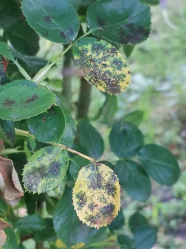

黑斑病
叶片上出现黑色斑块
这是与该表现相符的一种可能原因，请结合下方特征核对。

先看哪里
查看黑色病斑是否长在叶组织内、周围是否发黄，并检查较低叶片有无提前脱落。
可能原因与下一步
玫瑰黑斑病可形成深色病斑并使叶片脱落；能擦去的黑层则可能是煤污。清理病落叶，从根部浇水，给叶丛留出通风空间。
怎样区分相似问题
先区分叶内黑斑和表面黑污。煤污状附着物可沾到湿布上，坏死组织则擦不掉。
现在可以做什么
清走植株下方的落叶；拍照时同时记录刚形成的斑和已扩大的斑。
接下来观察什么
若受损叶迅速脱落，先确认植物种类，再结合蔓延方式寻求诊断。